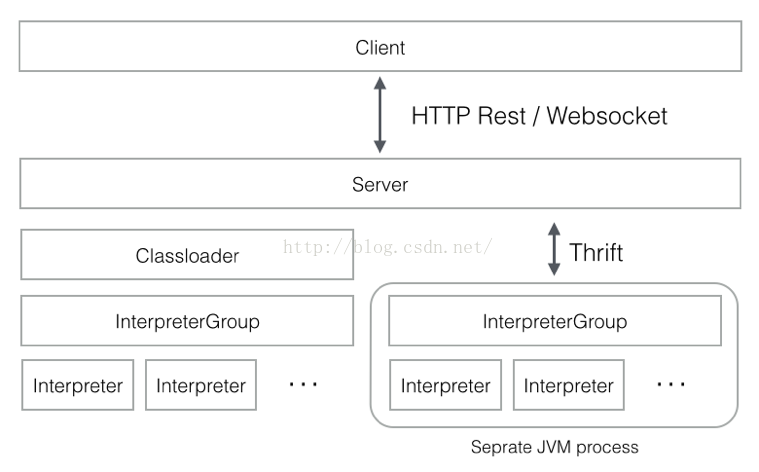
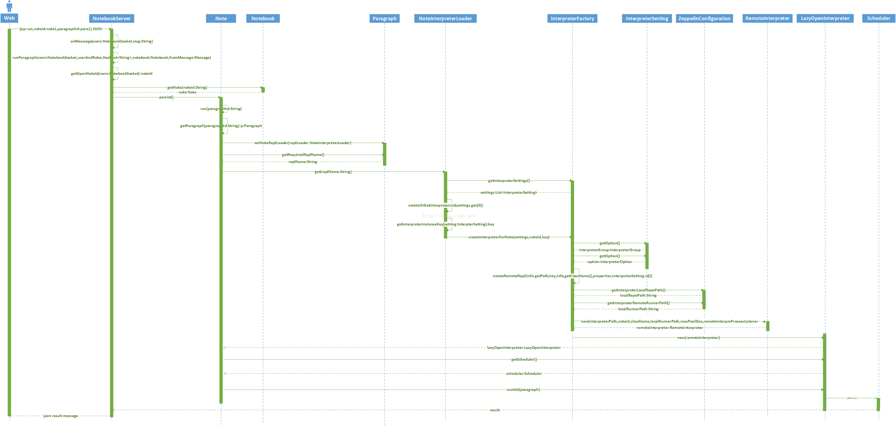
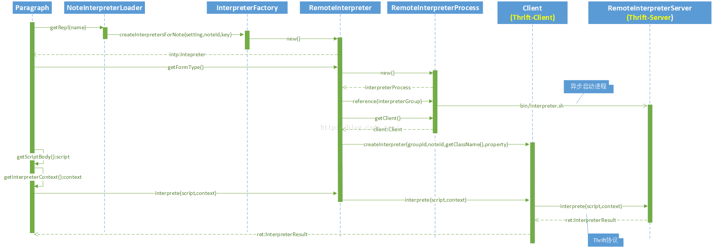

zeppelin源码分析-Note 执行过程

上图是zeppelin的前后台交互模型，zeppelin采用单独的jvm来启动interpreter进程，该Interpreter进程与zeppelinServer进程之间采用Thrift协议通信，其中RemoteInterpreterProcess是Thrift-Client端，而相应的RemoteInterpreterServer是Thrift-Server端。
Paragraph的执行分成“从前端UI提交ParagraphJob到其相关的Interpreter的Scheduler”和“Sheduler执行”2个部分，这2个部分是异步执行的。

以上是从前台请求执行指定的Note的指定的Paragraph开始，到该Paragraph提交到Scheduler之间的时序图。这个执行逻辑是与语言无关的。任何语言写的脚本（存储在Paragraph之中）都是上述提交执行的过程。
下面是Scheduler执行该ParagraphJob的时序图：

这里有如下的几点需要注意：
1) InterpreterFactory目前将所有的Interpreter都被实例化成了RemoteInterpreter，参见其createInterpretersForNote方法：
for (String intName : keys) {
RegisteredInterpreter info = Interpreter.registeredInterpreters.get(intName);
if (info.getClassName().equals(className)
&& info.getGroup().equals(groupName)) {
Interpreter intp;
if (option.isRemote()) {//根据option配置来创建
intp = createRemoteRepl(info.getPath(),
key,
info.getClassName(),
properties,
interpreterSetting.id());
} else {
intp = createRepl(info.getPath(),
info.getClassName(),
properties);
}
虽然InterpreterFactory在创建的时候做了判断，但是其实所有的Option.remote属性都为true，参见InterpreterFactory初始化的方法loadFromFile()：
private void loadFromFile() throws IOException {
//省略了部分代码
for (String k : info.interpreterSettings.keySet()) {
InterpreterSetting setting = info.interpreterSettings.get(k);
// Always use separate interpreter process
// While we decided to turn this feature on always (without providing
// enable/disable option on GUI).
// previously created setting should turn this feature on here.
setting.getOption().setRemote(true);//全部置为true了
//省略了部分代码
}
2) RemoteInterpreterProcess在reference相关的InterpreterGroup的时候，会使用apache common-exec框架创建新的进程。
public int reference(InterpreterGroup interpreterGroup) {
synchronized (referenceCount) {
if (executor == null) {
// start server process
try {
port = RemoteInterpreterUtils.findRandomAvailablePortOnAllLocalInterfaces();//随机可用端口
} catch (IOException e1) {
throw new InterpreterException(e1);
}
CommandLine cmdLine = CommandLine.parse(interpreterRunner);
cmdLine.addArgument("-d", false);
cmdLine.addArgument(interpreterDir, false);
cmdLine.addArgument("-p", false);
cmdLine.addArgument(Integer.toString(port), false);
cmdLine.addArgument("-l", false);
cmdLine.addArgument(localRepoDir, false);
executor = new DefaultExecutor();
watchdog = new ExecuteWatchdog(ExecuteWatchdog.INFINITE_TIMEOUT);
executor.setWatchdog(watchdog);
running = true;
try {
Map procEnv = EnvironmentUtils.getProcEnvironment();
procEnv.putAll(env);
logger.info("Run interpreter process {}", cmdLine);
executor.execute(cmdLine, procEnv, this);//启动新的进程
} catch (IOException e) {
running = false;
throw new InterpreterException(e);
}
其中interpreterRunner会指向bin/interpreter.sh脚本，该脚本的主要功能根据是否定义了SPARK_HOME环境变量（定位到spark-submit脚本），构建classpath，然后以指定的port运行ZEPPELIN_SERVER指定的主类，该变量被定义为：
ZEPPELIN_SERVER=org.apache.zeppelin.interpreter.remote.RemoteInterpreterServer
启动进程的代码如下：
if [[ -n "${SPARK_SUBMIT}" ]]; then
${SPARK_SUBMIT} --class ${ZEPPELIN_SERVER} --driver-class-path "${ZEPPELIN_CLASSPATH_OVERRIDES}:${CLASSPATH}" --driver-java-options "${JAVA_INTP_OPTS}" ${SPARK_SUBMIT_OPTIONS} ${SPARK_APP_JAR} ${PORT} &
else
${ZEPPELIN_RUNNER} ${JAVA_INTP_OPTS} ${ZEPPELIN_INTP_MEM} -cp ${ZEPPELIN_CLASSPATH_OVERRIDES}:${CLASSPATH} ${ZEPPELIN_SERVER} ${PORT} &
fi
而RemoteInterpreterServer实现了RemoteInterpreterService.Iface，是Thrift的Server端，RemoteInterpreterProcess是Thrift的client端。
3) Remote的含义是（至少目前是）“另外一个进程“，与zeppelinServer所在的进程不是同一个，该进程并非启动在另外一个独立的的机器上，zeppelin目前还不支持集群，所有的Interpreter jvm都启动在localhost上。因此如果想调试Interpreter的方法是如何工作的，需要为该Interpreter启动独立的调试进程，在zeppelinServer所在的调试进程中设置Interpreter.interpret(Stringst, InterpreterContext context)断点想要命中是行不通的。